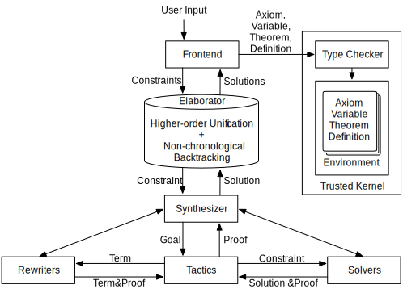
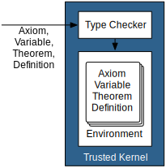

Soonho Kong / Leonardo de Moura
2013/10/04, Microsoft Research, End of Internship Talk
http://leanprover.net
Design Goal
- Rich Logic : Dependent Types + Classical Logic
Expressive enough to represent terms, types, and proofs.
\begin{aligned} expr := & \; \mathrm{Var} \; \mathbb{N}\\ & | \ \mathrm{Const} \; id\\ & | \ \mathrm{App} [expr]\\ & | \ \lambda \, id : expr, \; expr\\ & | \ \Pi \; id : expr, \; expr\\ & | \ \mathrm{Type} \; universe\\ & | \ \mathrm{Eq} \; expr \; expr\\ & | \ \mathrm{Let} \; id : expr = expr \; \mathrm{in} \; expr\\ & | \ \mathrm{Metavar} \; id \; meta\_ctx \\ & | \ \mathrm{Match} \dots \mathrm{Cases} \dots \end{aligned}Design Goal
- Rich Logic : Dependent Types + Classical Logic
Enable automation, support existing problems (e.g., SMT2.0)
Axiom MP {a b : Bool} (H1 : a ⇒ b) (H2 : a) : b
Axiom Discharge {a b : Bool} (H : a → b) : a ⇒ b
Axiom Refl {A : Type U} (a : A) : a = a
Axiom Subst {A : Type U} {a b : A} (P : A → Bool) (H1 : P a) (H2 : a = b) : P b
Axiom Eta {A : Type U} {B : A → Type U} (f : Π x : A, B x) : (λ x : A, f x) = f
Axiom ImpAntisym {a b : Bool} (H1 : a ⇒ b) (H2 : b ⇒ a) : a = b
Axiom Case : Π (P : Bool → Bool) (H1 : P ⊤) (H2 : P ⊥) (a : Bool), P a
Design Goal
- Rich Logic: Dependent Types + Classical Logic
- Automation
// why can't we have placeholders?
Theorem T (a b : T') : big_and_complex_theorem :=
let L_1 : Lemma_1 := Proof_1
...
L_i : Lemma_i := Proof_i
L_i+1 : Lemma_i+1 := _
...
L_n : Lemma_n := _
in
_
Design Goal
- Rich Logic: Dependent Types + Classical Logic
- Automation
- Provide flexible ways to influence the prover
- Domain Knowledge
- Tactics, Rewriters, Solvers
- Compositional approach vs. monolithic approach
Design Goal
- Rich Logic: Dependent Types + Classical Logic
- Automation
- Provide flexible ways to influence the prover
- Freedom to trust
- can be draconian, or rely on your own beliefs
- performance vs. trust
Design Goal
- Rich Logic: Dependent Types + Classical Logic
- Automation
- Provide flexible ways to influence the prover
- Freedom to trust
- Middleware between interactive and automated tools
- "LLVM for automated reasoning"
Design Goal
- Rich Logic: Dependent Types + Classical Logic
- Automation
- Provide flexible ways to influence the prover
- Freedom to trust
- Middleware between interactive and automated tools
- Performance
- Language of choice: C++11
- Consider parallelism from the beginning
Design of Lean: Big Picture
Design of Lean: Environment
- Collection of objects:
- Axiom (= Variable): Name + Type
- Theorem (= Definition): Name + Type + Value
Axiom H : 1 > 0.
Theorem pierce (a b : Bool) : ((a ⇒ b) ⇒ a) ⇒ a :=
Discharge ((a ⇒ b) ⇒ a) a (λ H : (a ⇒ b) ⇒ a, DisjCases a (¬ a) a (EM a)
(λ H_a : a, H_a)
(λ H_na : ¬ a, NotImp1 a b (MT (a ⇒ b) a H H_na)))
Design of Lean: Type Checker

- Proof checking = Type checking
Theorem pierce (a b : Bool) : ((a ⇒ b) ⇒ a) ⇒ a :=
Discharge ((a ⇒ b) ⇒ a) a (λ H : (a ⇒ b) ⇒ a, DisjCases a a (¬ a) (EM a)
(λ H_a : a, H_a)
(λ H_na : ¬ a, NotImp1 a b (MT (a ⇒ b) a H H_na))).
Error (line: 8, pos: 59) function expected at
MT (a ⇒ b) a H H_na
- Not possible to make an environment inconsistent by adding theorems/definitions
- Reduce the size of trusted kernel
Design of Lean: Trusted Kernel
- 5k line of C++ code (out of 35k)
- expr, context, env, normalizer, type checker, etc
- soundness of Lean relies on kernel
- can be implemented in different languages (e.g., F#, Ocaml, Scala) using different libraries to increase credibility
Design of Lean: Trusted Kernel
- Semantic attachment
- provide computation
- can always recover by defining them
- Performance vs. Trust
// Church Encoding, Unary Addition
plus ≡ λm.λn.λf.λx. m f (n f x)
// GMP(GNU Multi-Precision Library)
plus ≡ λm.λn.GMP_ADD_N(m, n)
Design of Lean: Frontend
- Input can be partially specified:
// User may ask Lean to fill the whole proof
Theorem pierce (a b : Bool) : ((a ⇒ b) ⇒ a) ⇒ a := _
// Some hints about the proof but still incomplete.
Theorem pierce (a b : Bool) : ((a ⇒ b) ⇒ a) ⇒ a :=
Discharge _ _ (λ H, DisjCases _ _ _ _ _ _).
// Encode domain knowledge as lemmae and ask Lean to use them
Theorem T (a b : T') : big_and_complex_theorem :=
let L_1 : Lemma_1 := Proof_1
...
L_i : Lemma_i := Proof_i
L_i+1 : Lemma_i := _
...
L_n : Lemma_n := _
in
_
Design of Lean: Frontend
- Input can be partially specified:
// a,b are implicit arguments.
Axiom Discharge {a b : Bool} (H : a → b) : a ⇒ b
// omit implicit arguments.
Theorem pierce (a b : Bool) : ((a ⇒ b) ⇒ a) ⇒ a :=
Discharge (λ H, DisjCases (EM a)
(λ H_a, H_a)
(λ H_na, NotImp1 (MT H H_na))).
// Frontend reveals placeholders
Theorem pierce (a b : Bool) : ((a ⇒ b) ⇒ a) ⇒ a :=
Discharge _ _ (λ H, DisjCases _ _ _ (EM a)
(λ H_a : _ , H_a)
(λ H_na : _ , NotImp1 _ _ (MT _ _ H H_na))).
// Lean solves the problem
Theorem pierce (a b : Bool) : ((a ⇒ b) ⇒ a) ⇒ a :=
Discharge ((a ⇒ b) ⇒ a) a (λ H : (a ⇒ b) ⇒ a, DisjCases a (¬ a) a (EM a)
(λ H_a : a, H_a)
(λ H_na : ¬ a, NotImp1 a b (MT (a ⇒ b) a H H_na))).
Design of Lean: Frontend
- Input can be partially specified:
// Example with overloading
Variable x y : Real
Check x + y // + is overloaded for ℝ and ℕ
// 1. Frontend reveals placeholder
Variable x y : Real
Check (?mOP x y)
// 2. and extract constraints
?mOP : ?mA → ?mB → ?mC
?mA ≈ ℝ
?mB ≈ ℝ
?mOP in {Real::Add, Nat::Add}
Real::Add : ℝ -> ℝ -> ℝ
Nat::Add : ℕ -> ℕ -> ℕ
// Solution
Variable x y : Real
Check (Real::Add x y)
Design of Lean: Frontend
- To fill the placeholders, a frontend generates constraints: \begin{aligned} & ctx \vdash t \approx s & (\mbox{t and \(s\) can be unified})\\ & ctx \vdash ?m \; \mathrm{in} \; \{t_1, \dots, t_n\} & (\mbox{choice})\\ & ctx \vdash ?m : t & (\mbox{?m is an expr of type t}) \end{aligned}
- To solve them, a frontend calls elaborator running:
- Higher-order Unification Algorithm (for \(ctx \vdash t \approx s\))
- Search Engine (for \(ctx \vdash ?m \; \mathrm{in} \; \{t_1, \dots, t_n\}\))
- Synthesizers (for \(ctx \vdash ?m : t\))
Design of Lean: Frontend
- Frontend = Constraint Generator
- There can be Multiple frontends:
- Lean (done)
$ ./shell/lean
Lean (version 0.1)
Type Ctrl-D to exit or 'Help.' for help.
# Variable a : Bool.
Assumed: a
# Variable b : Bool.
Assumed: b
# Variable H : a /\ b.
Assumed: H
# Theorem pierce (a b : Bool) : ((a ⇒ b) ⇒ a) ⇒ a := _
Discharge (λ H, DisjCases (EM a)
(λ H_a, H_a)
(λ H_na, NotImp1 (MT H H_na))).
Proved: pierce
Design of Lean: Frontend
- Frontend = Constraint Generator
- There can be Multiple frontends:
- Lean (done)
- SMT2.0 (work-in-progress)
(declare-fun a () Int)
(declare-fun b () Int)
(assert (> a 0))
(assert (< b a))
(check-sat)
Variable a : Int
Variable b : Int
Axiom H1 : a > 0
Axiom H2 : b < a
Theorem U : false := _
Design of Lean: Frontend
- Frontend = Constraint Generator
- There can be Multiple frontends:
- Lean (done)
- SMT2.0 (work-in-progress)
- Theorem provers
- Verification tools
- Synthesis tools
Design of Lean: Elaborator
- Solve the followings using higher-order unification and non-chronological backtracking: \begin{aligned} & ctx \vdash t \approx s & (\mbox{t and \(s\) can be unified})\\ & ctx \vdash ?m \; \mathrm{in} \; \{t_1, \dots, t_n\} & (\mbox{choice})\\ \end{aligned}
- Call synthesizer to solve:
\begin{aligned}
& ctx \vdash ?m : t & (\mbox{?m is an expr of type t})
\end{aligned}
Ex: \({ASSOC}, \mathrm{COMM}, \mathrm{ID}, a : \mathbb{N} \vdash ?m : 0 + (a + 0) = a\)
Design of Lean: Synthesizer
\begin{aligned} & ctx \vdash ?m : t \end{aligned}Find an expr of type \(t\) under context \(ctx\)
- (possibly) Use rewriters, tactics, and solvers
- To take a compositional approach, provide
- Interface for a basic building block
- Combinators to construct complex objects from basic blocks
Design of Lean: Rewriter
Example: \(\quad \mathrm{ASSOC}, \mathrm{COMM}, \mathrm{ID}, a : \mathbb{N} \vdash ?m : 0 + (a + 0) = a\)
Theorem Rewriter: Basic building block
Design of Lean: Rewriter
Example: \(\quad \mathrm{ASSOC}, \mathrm{COMM}, \mathrm{ID}, a : \mathbb{N} \vdash ?m : 0 + (a + 0) = a\)
Theorem Rewriter: Basic building block
OrElse, Try, Repeat Rewriter: Combinators
Design of Lean: Rewriter
Example: \(\quad \mathrm{ASSOC}, \mathrm{COMM}, \mathrm{ID}, a : \mathbb{N} \vdash ?m : 0 + (a + 0) = a\)
Theorem Rewriter: Basic building block
OrElse, Try, Repeat Rewriter: Combinators
\[ 0 + (a + 0) \xrightarrow{ASSOC} (0 + a) + 0 \xrightarrow{ID} 0 + a \xrightarrow{COMM} a + 0 \xrightarrow{ID} a\]
Design of Lean: Outcome #1
- The elaborator succeeds and fill all the holes
- The Lean Kernel accepts the elaborated object without holes
Design of Lean: Outcome #2
- The elaborator succeeds and fill all the holes
- But the Lean Kernel rejects the elaborated object
- Some of the components may have bugs
Design of Lean: Outcome #3
- The elaborator fails to fill the holes,
- Produce a new environment as a counterexample
- provides definitions and theorems for all user defined variables and axioms
Design of Lean: Outcome #3
- User Input
Variable a : Nat
Axiom H : a > 0
Theorem T : a >= 2 := _
- Counter-example
Definition a : Nat := 1
Theorem H : a > 0 := Trivial
Theorem T : not a >= 2 := Trivial
Design of Lean: Outcome #4
- The elaborator fails because of its own limitation
- Produce a trace explaining why a particular hole could not be filled
- Useful for refinement
Current Status of Lean
Acknowledgment
- Jeremy Avigad @ Carnegie Mellon University
- Grant Passmore @ University of Edinburgh
- Cody Roux @ Carnegie Mellon University
- Nikhil Swamy @ Microsoft Research
Thank you
Any Questions?